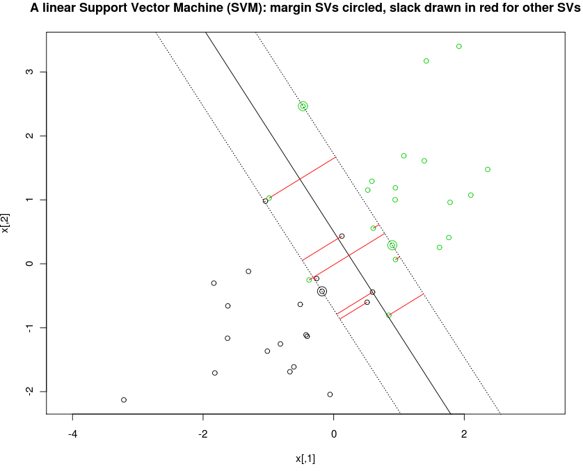

Quadratic programming modeling language for R
MATLAB has CVX, Python has CVXMOD. Why doesn't R have a high-level modeling language for specifying convex optimization problems, then analyzing and solving them using the most efficient algorithms available?
There is some work toward a unified interface for various mathematical programming solvers in the ROI project on R-Forge, but it does not provide a high-level modeling language.
The quadmod package is a proof-of-concept for an optimization problem modeling language within R. To get started, check out the following example, which solves the primal problem of linear SVM for some simulated data in 2d:
install.packages("quadmod",repos="http://R-Forge.R-project.org") library(quadmod) example(standard.form.constraints)

The interesting part of the example is the definition of the problem constraints, which is accomplished with code that looks a lot like the mathematics:
vars <- make.ids(slack=n,intercept=1,normal=p) constraints <- vars$slack >= 0 for(i in 1:n){ ivars <- with(vars,intercept*y[i] + sum(normal)*(x[i,]*y[i]) + slack[i]) constraints <- c(constraints,list(ivars >= 1)) }
The code is written in terms of the variable names slack, intercept, normal instead of standard form constraint matrix indices, and is thus easier to read, write, and maintain. This helps a lot when writing complicated mathematical programs.
However, quadmod is only a proof-of-concept for quadratic program constraints. We need several things before we get an R package as good as CVX:
- a syntax for specifying the objective function.
- a convex analysis framework for translating problems into standard form and analyzing them to determine the most efficient solver available.
Please email Toby DOT Hocking AT inria DOT fr if you have heard of any interesting progress in this direction or are interested in working on this together.
Back to the R-Forge project page.
Org version 7.5 with Emacs version 22
Validate XHTML 1.0